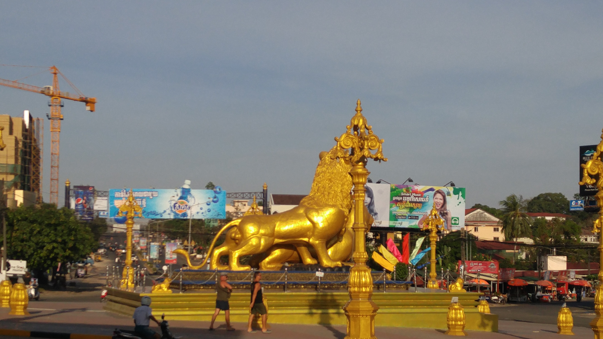

Go Back
Sihanoukville

Sihanoukville is probably Cambodia's most popular coastal town. I've visited Sihanoukville twice. The first time was back in 2017. At this time I enjoyed my visit here and found it to be a fun place to spend a few nights. It had a slow pace of life and you spent most of your days lounging at the beach areas. Unfortunately, since then the city has changed a lot. Massive investments from Chinese investors have transformed the city. These are primarily casinos but also hotels and resorts. This has caused a change in the atmosphere of the city and has actually made the situation worse for many locals who don't benefit from these casinos. Many locals had been forced out of their homes for these developments and crime and exploitation in the area has increased. I'll recount some of my favourite activities and my recommendation for a good hostel if you plan to visit. It still remains a nice beach destination and nearby Otres Beach is also popular and maintains more of the original laid back feel.
Serendipity Beach is the main beach in Sihanoukville. When I first visited the beach was lined with bars/ restaurants which extended onto the beach. There were always events going on both during the day and at night. Unfortunately, this strip of businesses changed a lot by the second time I visited which was only a year later in 2018. Many were demolished and the beach became more commercialized. There are still however some restaurants/ bars along the beach where you can enjoy your time.
It's very easy to go boating to nearby islands or go on a "booze cruise" type party boat. Back in the day many of the bars on the beach offered party boat trips a few times a week. These involve taking a large boat from island to island. The boat is fully equiped with food and drinks. This is a fun way to make new friends and enjoy beautiful tropical islands and fun activities.
Kerfuffle is a night party out in the jungles by Otres Beach. If you're into nightlife it's a unique experience. The music was mostly psytrance and the event goes all night long. It's situated in the jungle and has treehouses, wooden walkways, old abandoned cars and other random features. I've read that it has been discontinued but I can't confirm that.
If you're into hostels and want a reasonable accomodation that is close to Serendipity Beach and offers a social atmosphere I recommend the Big Easy. It was a good place to make new friends and enjoy the city from. They also had a good selection of food on the menu here.